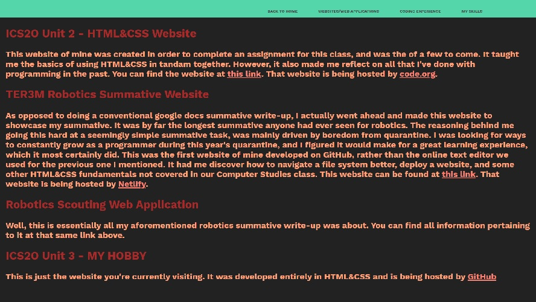

ICS2O My Hobby Assignment
This website was about my favorite hobby, being programming. I talked about all sorts of things that was related to my relationship with programming
Home Page
In this page of the website, I talked about some hobbies of mine I've had in the past. I contrasted those along with programming and explained why it's my favorite one. I also explained the nature of how the website came about, which was to fulfill the requirements of an assignment for this course.
It had no content other than text and looked like this:

Websites/Web Applications
This page on the website is actually about the exact same thing as this one is. It went over all websites and web apps I've developped. However, it didn't go into as much detail as what I'm doing here. Also, it included the Robotics Scout Web App discussed in my Robotics Summative Website
Again, this one had no content other than text, and looked like this: 
Coding Experience
In this web page, I pointed out how you could access my GitHub repositories and the 1st website on this page.
What I also did, though, was talk about the technologies, including languages, that I've learned
in chronological order like so:

My Skills
Then, this last page of mine just listed my 'skills', as in the technologies/languages I've learned. This was essentially done as if it were a technical resume. Here is where you can find it.
How It's Hosted
This website of mine is hosted by GitHub by using something called GitHub Pages for free.